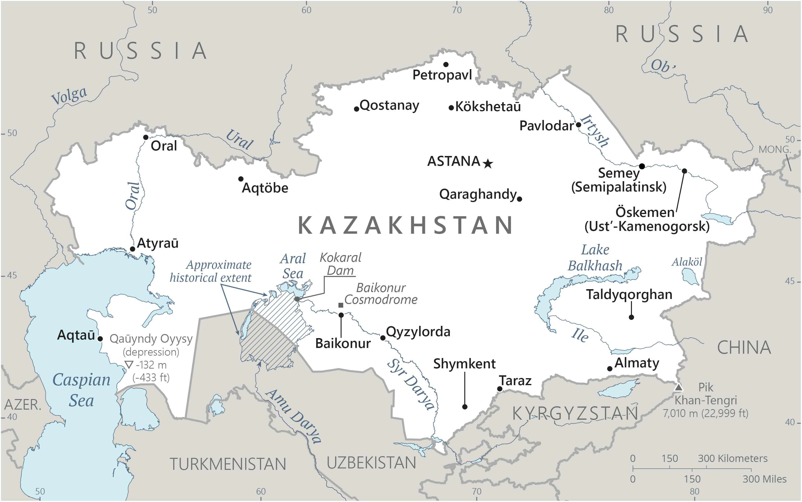

Genel Bilgiler
Kazakistan, Orta Asya’da yer alan üniter bir cumhuriyettir. Başkenti Astana’dır (resmî adı Nursultan). Yaklaşık 19 milyon nüfusa sahiptir. Resmî dilleri Kazakça ve Rusça’dır, para birimi Kazak Tengesi (KZT)’dir. Kazakistan, zengin doğal kaynakları ve enerji rezervleri ile bölgesel bir ekonomik güçtür.
Kazakistan, kuzeyde Rusya, doğuda Çin, güneyde Kırgızistan, Özbekistan ve Türkmenistan, batıda Hazar Denizi ile çevrilidir. Yüzölçümü yaklaşık 2.724.900 km²’dir, dünyanın en büyük kara ile çevrili ülkelerinden biridir. Ülke coğrafyası bozkırlar, dağlar, göller ve çöllerden oluşur. Önemli nehirleri Irtyş, Syr Darya ve Ural’dır.
Başkent: Nur-Sultan (Astana)
Kıta: Asya
Yüzölçümü: 2.724.900 km²
Nüfus (2025): 19.000.000

Bayrak Anlamı: Kazakistan bayrağı açık mavi zemin üzerinde sarı bir güneş ve altın renginde bir kartal sembolünden oluşur; sol kenarda dikey bir milli motif şeridi bulunur. Mavi gökyüzü ve barışı, sarı güneş enerji ve refahı, kartal özgürlüğü simgeler. Bayrak 1992 yılında kabul edilmiştir.
Kazakistan Haritası
Ekonomi
Kazakistan ekonomisi doğal kaynaklar ve enerji sektörüne dayanır. Petrol, doğal gaz, kömür ve mineraller ihracatta ön plandadır. Tarımda tahıl, pamuk ve hayvancılık öne çıkar. Sanayi sektöründe metal işleme, kimya ve inşaat malzemeleri üretilir. Hizmet sektörü finans, lojistik ve ticaret alanlarında gelişmiştir. Kazakistan, bölgesel enerji ve ulaşım koridorları açısından stratejik öneme sahiptir.
| Yıl | İhracat (Milyar $) | İthalat (Milyar $) |
|---|---|---|
| 2019 | 64 | 45 |
| 2020 | 58 | 42 |
| 2021 | 70 | 60 |
| 2022 | 75 | 65 |
| 2023 | 78 | 68 |